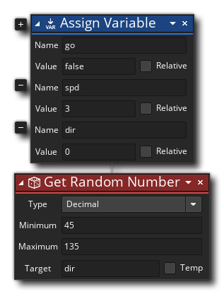
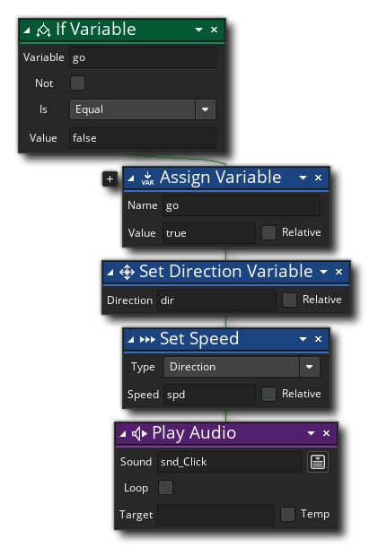
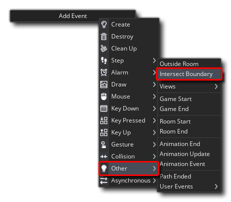
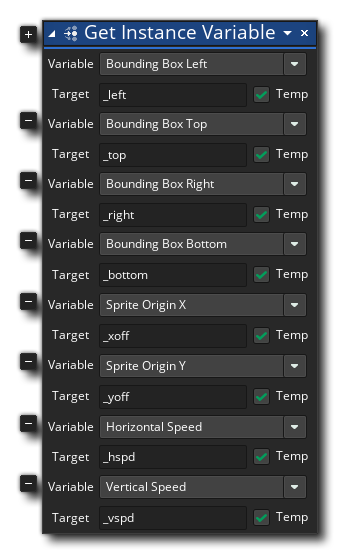
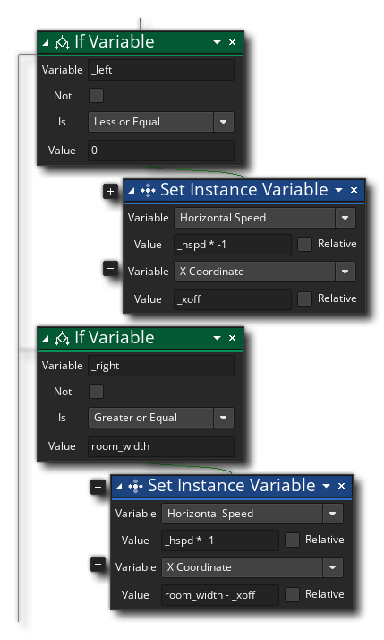
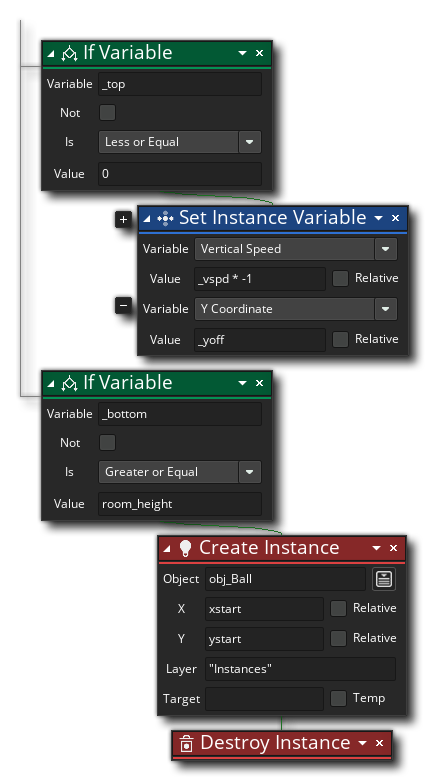
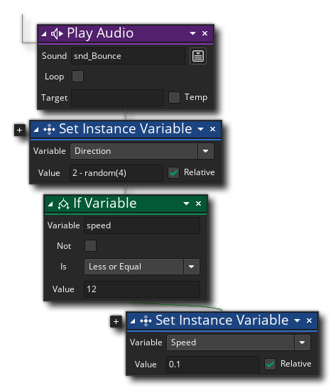
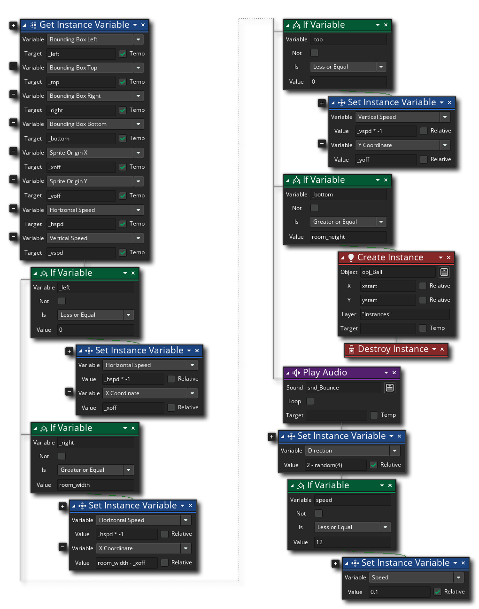

We created the Ball object previously, but we haven't added any events to it. Let's remedy that now by adding a Create event, to which we'll add the following actions to set up some variables: 
This object will also need a Keyboard Down Event targeting the Space key, so we'll add that now and give it the following actions: 
All we're doing here is in the event that checks to see if the "Space" key has been pressed down, we check to see if the go variable is set to false, and if it is then we play a sound and then set the ball in motion, setting go to true again so it only happens once.
That'll set our ball in motion, but what about when it reaches the edges of the game area? If we don't stop it, then it'll fly out the game room, which isn't really much fun! To prevent this we'll detect when the ball is in a collision with the room boundary and react accordingly. Luckily for us, in the Other event category we have the Intersect Boundary event: 
First we need to define a number of local temporary variables to hold various different instance variable values. You could just use the instance variables directly, but we'll assign them to local vars instead as it's easier to remeber and keep track of: 
We then need to add the following to use these local variables to perform our boundary checks. First the left and right check: 
These actions check to see if the bat bounding box has left either side of the room, and if it has it reverses the horizontal speed (making the ball "bounce") and then sets the it to a position that keeps it perfectly within the room. We'll do something similar for the top and bottom of the room now: 
These actions will check to see if the ball is about to exit from the top of the room and then reverse the vertical speed accordingly, except if it goes out the bottom. In that case, the ball instance will be destroyed and a new one created.
The final section of DnD™ that we need to add will play the "bounce" sound we added earlier, and then also add a small random amount between 2 and -2 to the direction of the ball. This is to prevent the ball possibly getting "stuck" bouncing at perfect 180° angles between the wall and anything else. We will also increment the speed of the ball a little bit, which will increase the difficulty of the game as it progresses: 
The whole event should now look something like this: 